Con Volkswagen implementamos soluciones avanzadas de ciberseguridad, realizando auditorías exhaustivas y configurando firewalls para proteger sus sistemas internos de ataques externos. Esto garantizó la seguridad de la información sensible y la continuidad operativa en sus plantas de producción.
Para Peugeot diseñamos y desarrollamos aplicaciones a medida para su plataforma móvil, facilitando la gestión de su red de concesionarios y mejorando la experiencia del usuario final. Nuestro software personalizado permite optimizar procesos de venta y postventa con funcionalidades específicas adaptadas a sus necesidades.

Mercedes confió en nuestro equipo para brindar soporte técnico 24/7, con atención rápida y resolución de incidentes en sus sistemas críticos. Nuestro servicio incluye mantenimiento preventivo y monitoreo remoto para minimizar tiempos de inactividad y asegurar el rendimiento óptimo de sus operaciones.
Implementamos y gestionamos la infraestructura tecnológica de Wiesmann, desde redes hasta servidores en la nube, asegurando una plataforma robusta y escalable. Esto permitió mejorar la comunicación interna y soportar el crecimiento de sus operaciones digitales sin interrupciones.

Trabajamos junto al equipo de Fórmula 1 de McLaren para desarrollar un avanzado sistema integral de mediciones y telemetría. Este sistema captura datos en tiempo real desde los autos, permitiendo análisis precisos del rendimiento y facilitando decisiones estratégicas que potencian su desempeño en las competencias más exigentes.